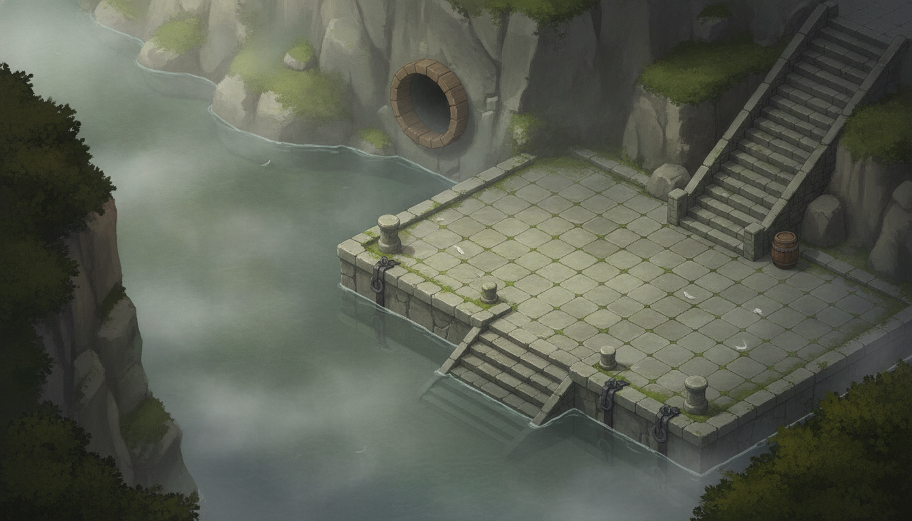
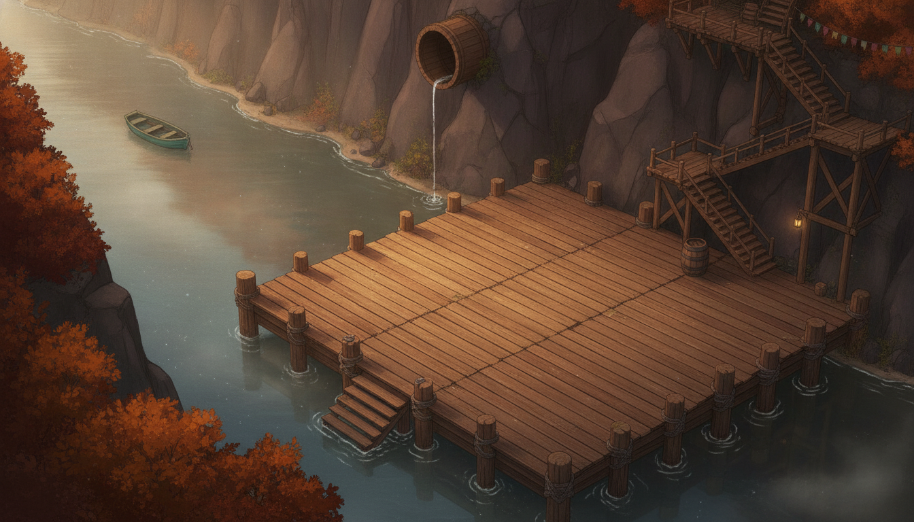
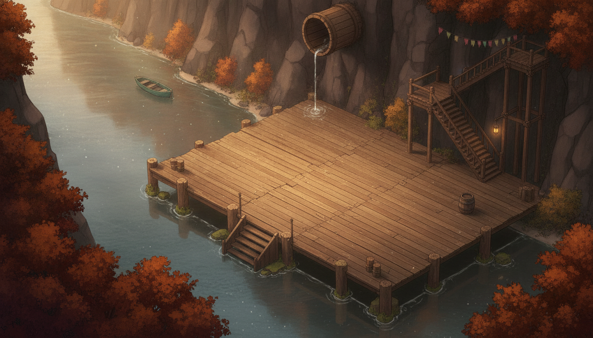
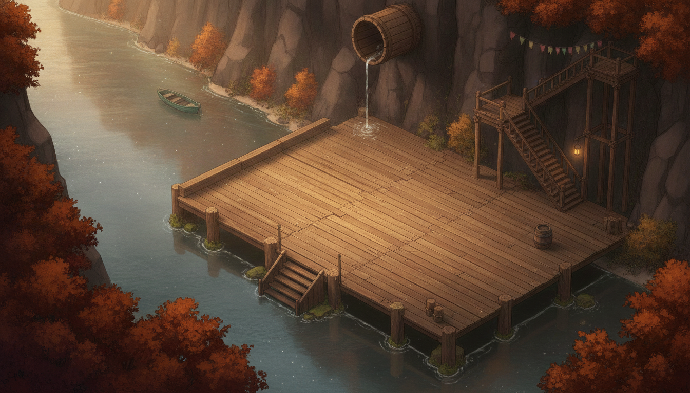

The landing repaint — warm dawn
Director's note: "the landing where Maren joins is a bit too gray and sad, given our new
design overhaul of the town." Same tailwater composition (flume mouth in the cliff, landing quay with
mooring, portage stair, river running north) rebuilt in the scaffold-town language of
dellhollow-master-6b: timber decking on piles instead of grey stone, first-dawn gold instead of
grey pearl, autumn on the gorge rims, the town's presence upstream — a teal skiff, a night-lantern still lit
at the stair foot, faded bunting catching the first light. Kept quieter than the town scenes: dawn after a
long night. Click any image to zoom. All rolls parked in
assets/scenes/landing/candidates/. Shipped mask kept (footprint verified against staging).
Before (retired)

pre-warm — the pre-overhaul painting: grey stone quay, pearl mist. Beautiful, but a
farewell in a language the town no longer speaks — stone where nothing but dam masonry should be stone, and a
palette that plays the ending as loss.
Shipped — warm-2 + trough (now main.png)

shipped — chosen roll warm-2 with one additive cleanup: a mossy half-barrel trough
catches the flume mouth's overnight trickle (the first roll left the drip splashing a ripple ring onto bare
planks). Timber deck on piles with stone footings only at the waterline; boarding steps at the SW corner where
the boat warps in; scaffold portage stair upper-right with the lantern still burning from the night; teal skiff
and dawn-gold water upstream; bunting high on the cliff. All Beat-8 staging coordinates land on decking.
Other rolls (for the record)

warm-1 — good language, duskier key. Passed on because its flume mouth reads as a
tipped bucket and its west deck-wing extends under the boat-moor point (560,560), which would beach the boat
sprite on dry planks.

warm-2 (base roll) — the chosen composition before cleanup.
Flaw: the flume drip lands as a ripple ring painted on the deck planks.

warm-2-fix (failed edit) — attempted to reroute the drip into a water notch;
the model restyled the corner but kept the ripple on wood (removal edits fail — pipeline
rule reconfirmed). The additive trough edit above is what shipped.